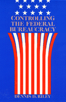

A probing study examines the relationships between the federal bureaucracy and the elements of society it is intended to serve
A probing study examines the relationships between the federal bureaucracy and the elements of society it is intended to serve


 A probing study examines the relationships between the federal bureaucracy and the elements of society it is intended to serve
A probing study examines the relationships between the federal bureaucracy and the elements of society it is intended to serve

|  |
Controlling the Federal BureaucracyDennis D. Rileypaper EAN: 978-0-87722-704-5 (ISBN: 0-87722-704-7) |
"A concise, elegantly written analysis of the power of this institution and its relationship to other institutions and political actors Riley’s clear, elegant writing style and adequate bibliography make this a good choice for the introductory courses on politics and administration at which it would appear to be aimed."
—Perspective
How do we fit bureaucracy into a democratic political system? No other question has received—or deserved—more attention from those who study public administration. While this question might receive slightly different responses, there is one common thread, the notion that bureaucrats must be subject to external controls. Who possesses the ability to influence the government from the outside? How do these people use their influence? Is their influence used to promote democratic values?
Dennis Riley assesses the effect congressional committees and subcommittees have on government agencies as well as the influence of clientele groups and professional associations. The author also explores the impact the President, the courts, and the critics of bureaucratic agencies—such as the Sierra Club or Ralph Nader’s consumer watch-dog groups—have on bureaucracy.
This book forces us to realize that many of our controlling influences on federal agencies only serve to reinforce the narrowness and isolation that plagues contemporary bureaucracy, where the general public interest and even competency are sacrificed in the belief that existing agency policies are the only sound and workable policies around.
"A useful introductory summary of group and individual interests in current federal administrative practice."
—Choice
Dennis D. Riley is Professor and Chairman of the Political Science Department at the University of Wisconsin, Stevens Point.
Political Science and Public Policy
© 2015 Temple University. All Rights Reserved. This page: http://www.temple.edu/tempress/titles/434_reg.html.